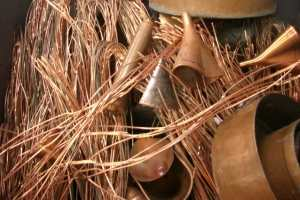
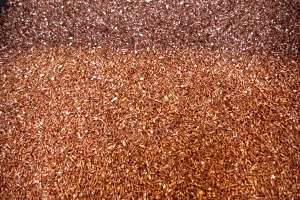

Wir verwenden Cookies, um zu verstehen, wie Menschen unsere Website nutzen.
Durch die Nutzung unserer Website erklären Sie sich mit der Verwendung von Cookies einverstanden. Weitere Informationen finden Sie in unsereren Datenschutzbestimmungen.
Was ist Millberry? Kupfer Millberry bezeichnet man saubere Kupferdrähte mit einem Durchmesser von mindestens 1 mm. Der Draht muss von der Isolation mechanisch getrennt worden sein, ohne Anhaftungen von Schmutz oder Rückstände und sauber vom Abbrennen der Isolation. Millberry-Kupfer zeichnet sich durch klare gl&aumL;nzende rot-gelb Farbe aus.
Kupfer Berry bezeichnet man leicht oxidierter Kupferdraht aus Kupferkabel.
Kupfer-Raff ist dann oxidiertes unsauberes Kupfer mit einer Reinheit von mindestens 95 bis 96 Prozent Kupferanteil.
Sie haben hier gelandet, weil Sie haben nach Kupfer, Kupfe, Kupfer Verkauf, Kupfer verkaufen, Kupfer Ankauf, Altkupfer, Kupfer entsorgen, Kupfer verkaufen Privat, Kupfer Millberry, Kupfer verkaufen in der Nähe gesucht.
Kupfer Ankauf / Kupferankauf
Für unsere Partner-Werke in der Schweiz kaufen wir: Gemischte Kupferschrotte, wie z.B. Kupferrohre, -bleche, -drähte, Kupferkabel etc. Blanke Kupferdrahtschrotte, Kupfer Umschmelzblücke, Kupfer Granulate, mit geringen Kunststoffgehalten, Kupfer-Späne, Kupfer-Stanzabfälle, Kupfer-Durchlauferhitzer, Kupfer-Ausläufer, Kupfer-Hammerschlag.
Kupferlegierungsschrotte: Rotguss-Stücke, Blöcke und -Späne, mit min. 70 % Cu, Messing-Stücke, Blöcke und Späne, mit min. 55 % Cu, Aluminium-, Mangan- und Silizium-Bronze-Stücke, Blöcke und Späne, mit min. 70 % Cu. Wir kaufen ausserdem Kupfer- Messingkühler, mit 63 % Cu, frei von Eisen und Kunststoffen.
Qualität von Kupferschrott
Die bestes Kupfer (Millberry) Qualität erzielt nicht lackierte Kupferdraht mit einem Durchmesser grösser als ein Millimeter (0,75 mm2). Danach folgen Kupferschienen oder Elektrolyt, Kupfer Oberleiter, Kupferblech und Kupferrohre aus blankem Kupfer. Einen etwas schlechtere Kupferpreis erzielt man mit oxidiertem Kupfer. Die schlechteste Qualitätsstufe somit auch schlechteste Kupferpreise, nennt man Raff sogenannte Sammelkupfer. Darunter versteht man Kupferschrott mit Verschmutzungen aber minimale Kupferanteil von 95%. Die Qualität des Altupfer kann man beim Kupfer Ankauf einen Preisunterschied von bis zu 25% ausmachen.
Kupferschrott:
Altkupfer Schrottsorten die wir ankaufen:
Kupfer (Kupferkabel) Millberry (blank)
Kupfer Berry (farbige, angelaufen)
Hartkupfer / Kupferschienen (Elektrolyt)
Raffiniertes Kupfer
Kupferbleche
Kupferrohre
Kupferrundstangen
Kupferstangen
Kupferbläcke
Kupferdraht ohne Isolierung
Rundkupfer
Kupferschienen
Altkupfer
Kupfergranulat (von Kupferkabel)
Kupferbarren
Elektrolytkupfer
Kupfer Raff
Sammelkupfer
Kupfer verkauf / Kupfer verkaufen

Kupferschrotte (Kupferkabel) Millberry (blank) Kupfer Berry (angelaufen) Hartkupfer Raffiniertes Kupfer Kupferbleche Kupferrohre Kupferrundstangen Kupferstangen Kupferblöcke Kupferdraht ohne Isolierung Rundkupfer Kupferschienen Altkupfer Kupfergranulat (von Kupferkabel) Kupferbarren Elektrolytkupfer.
Kupfer hat es in jedem Haus Ob Neubau, Umbau oder Sanierung, vor der Arbeit stehen die Mühen einer fachgerechten Planung. Vor allem bei der Materialauswahl ist wichtig richtige Entscheidungen zu füllen. Deshalb sollte man auch nicht am falschen Ort sparen, sondern sofort zu hochwertigen Materialien wie Kupfer greifen. Eine gute Wahl haben Sie getroffen, wenn Sie Materialien aus Kupfer bei Ihrem Hausbau einsetzen: denn Kupfer steigert den Wiederverkaufswert einer Immobilie enorm. Egal, ob für das Dach oder in der Hausinstallation mit Kupfer liegen Sie immer richtig! Aufgrund seiner Langlebigkeit und hervorragenden Qualität spart Kupfer Ihr Geld. Und auch die Wärmedämmung und der Schallschutz sind mit Kupfer im Haus kein Problem.
Kupfer ist weich, dehnbar und zäh. Seine Schmelztemperatur beträgt 1082C und die Siedetemperatur 2567C. In einem CO2-haltigen Milieu entsteht an der Oberfläche des Kupfers eine basische Karbonat-Schicht, die man Patina nennt.
Kupfer besitzt hervorragende Eigenschaften bezüglich Leitfähigkeit von Wärme und Strom. Hausinstallation Eine besonderen Wert hat Kupfer im Bereich der Hausinstallation z.B. Elektrokabel. Nicht umsonst vertraut man bei mehr als 60 Prozent aller Hausinstallationen dem Werkstoff Kupfer. Denn Kupfer ist wärme-, kälte- und druckbeständig, flexibel in der Anwendung und sicher. Ausserdem altert Kupfer nicht. Unter Strich werden die Kosten dadurch spürbar gesenkt! Im Gegensatz zu allen anderen Materialien eignet sich Kupfer dank seiner hervorragenden Eigenschaften für die unterschiedlichsten Anwendungsbereiche in der Hausinstallation. Von Trinkwasser-, Gas- und Ölleitungen bis hin zu Flächenheizungen, thermischen Solar- und Regen- Wassernutzungsanlagen. Kupfer ist eben universell.
Wenn Kupfe knapp wird

Die Industrialisierung der Entwicklungsländer führt zu einer Verknappung von Metallen wie Kupfer. Als Konsequenz hat Livuss GmbH die Anstrengungen auf dem Gebiet des Metall-Recyclings verstärkt. Kupfer, Zinn und weitere Metall-Rohstoffe sind auf unserem Planeten knapp geworden. Die Industrialisierung schreitet in vielen Entwicklungsländern rasch voran und führt vor allem in Asien, besondere China, zu einer intensiven Bautätigkeit. Deshalb hat sich beispielsweise der Kupferpreis seit 2002 mehr als verdreifacht. Und die chinesische Regierung prognostizierte einen Nachfrageanstieg um einige Prozente was zu Kupferpreise anstieg führt. Da zeichnet sich eine grosse Mangel ab, werden doch auf der anderen Seite nicht genügend neue Kupferminen erschlossen, um den weltweiten Bedarf zu decken.
Kupferpreis wird ansteigen
Kupfer Recycling steigt in dieser Situation sind die Recycler gefordert. Seit Jahren sieht sich auch Livuss GmbH mit der stark gestiegenen Nachfrage nach rezyklierbarem Kupfer und
(Kupferkabel) konfrontiert. Immer grösser werden die umgesetzten Mengen, immer höher steigen die Kupferpreise. Grosse Unternehmen der Branche ziehen auf ihrer Suche nach hochwertigen Kupfer immer weitere Kreise und finden ihre Partner auch im Schweiz.
Wir bieten Privatpersonen und Gewerbe Ankauf von alte Altkupfer wie Sammelkupfer, Kupfer Blech neu, Millbery aus Produktion, Werkstatt oder Privatesammlung usw. an uns zu verkaufen.
Dazu benützen Sie oben vorbereitete Offerteformular oder rufen Sie einfach an und wir machen Ihnen sofort eine persönliche Offerte!